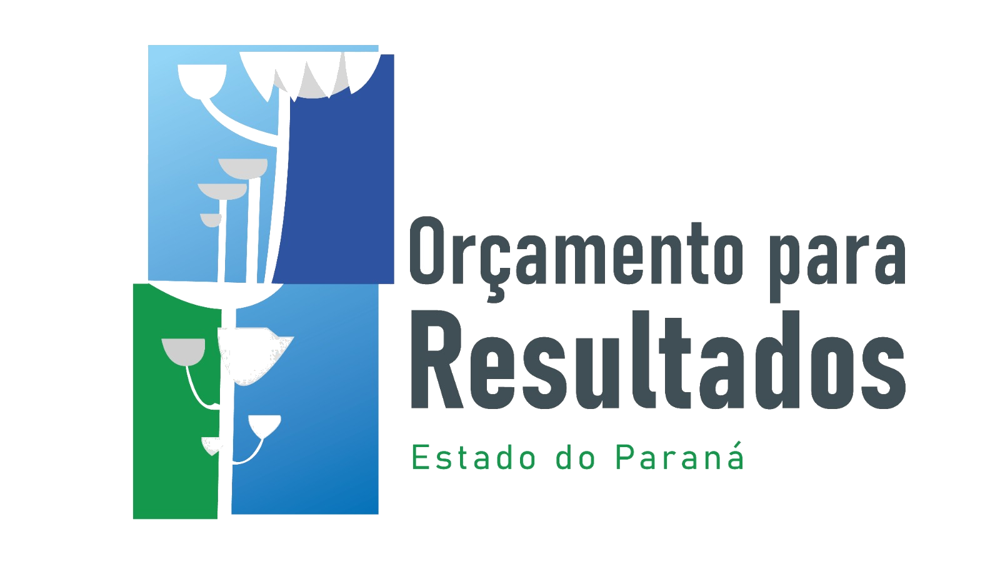

Visão integrada
Panorama Executivo
Síntese do desempenho acadêmico, operacional e orçamentário da rede estadual.
Ano base 2024

SETI Paraná | Orçamento para Resultados
Monitoramento executivo das universidades estaduais do Paraná


Visão integrada
Síntese do desempenho acadêmico, operacional e orçamentário da rede estadual.